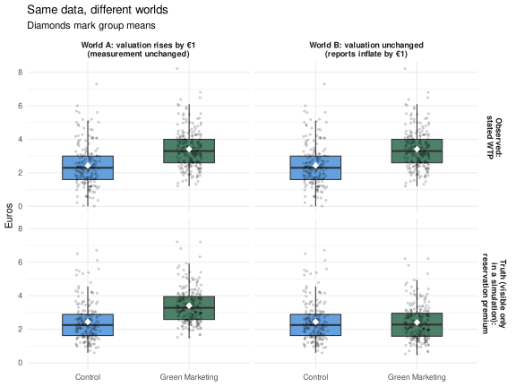
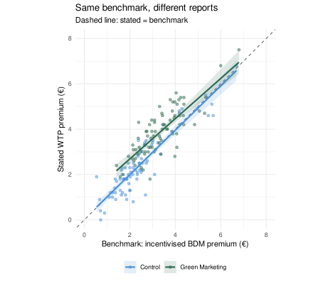
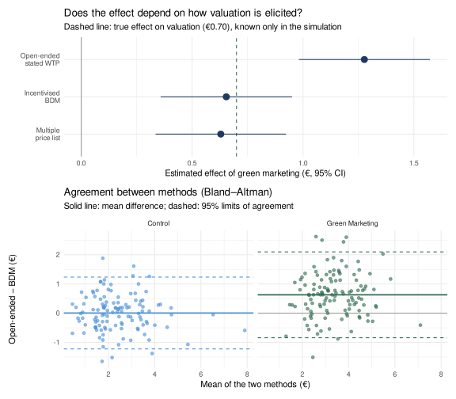
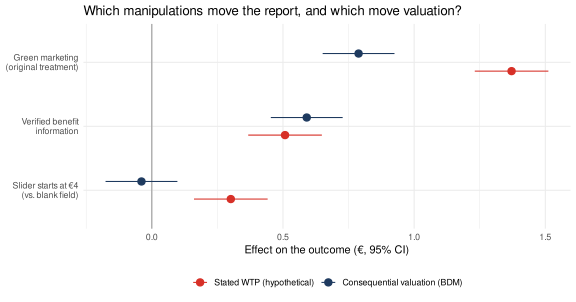
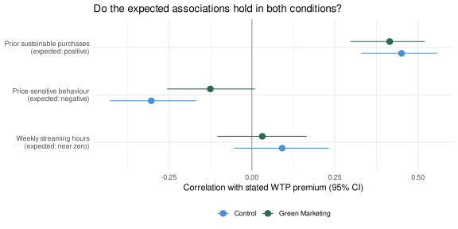

# Uncomment to install if needed:# install.packages(c("lavaan", "semTools", "MASS", "ggplot2",# "dplyr", "tidyr", "knitr", "patchwork"))library(lavaan) # CFA and SEM (multigroup invariance models)library(semTools) # auxiliary SEM toolslibrary(MASS) # mvrnorm(): generate multivariate normal datalibrary(ggplot2) # Visualizationslibrary(dplyr) # Data manipulationlibrary(tidyr) # Data reshapinglibrary(knitr) # Nicely formatted tableslibrary(patchwork) # Combine ggplot panels# ── Helper objects shared with the Part 1 simulation ──────────────────────────# Factor correlation matrix used in simulationphi_pop <-matrix(c(1.00, 0.40, 0.45,0.40, 1.00, 0.50,0.45, 0.50, 1.00),nrow =3, byrow =TRUE,dimnames =list(c("EC", "GPI", "BA"), c("EC", "GPI", "BA")))# Item generation helpergen_items <-function(latent, loadings) {sapply(loadings, function(lam) { lam * latent +sqrt(1- lam^2) *rnorm(length(latent)) })}# lavaan numbers groups in order of first appearance in the data. Pin the order so# that "group 2" always means Green Marketing, whatever the first row happens to be.grp_lab <-c("Control", "Green Marketing")
Part 3: Measurement Invariance — Same Construct, Same Ruler?
Connecting to Parts 1 and 2
Parts 1 and 2 both showed how Y can capture more than X. Part 3 asks a related but different question. Discriminant validity asks whether a measure can be told apart from other constructs. Measurement invariance asks whether the relationship between the underlying quantity and the observed score is the same across groups or conditions. The two problems can overlap, but neither implies the other: a scale can behave identically in every condition and still fail discriminant validity (the Part 1 scenario), and a scale can separate cleanly from neighbouring constructs yet work differently in treatment and control.
The experimental version of the problem is easy to state. Two GPI items might score higher in the treatment condition not because participants genuinely intend to purchase more, but because the green marketing exposure makes those specific items feel more socially desirable or salient. Within each condition the scale may be perfectly reliable; across conditions, the same item score no longer corresponds to the same level of purchase intention. That resembles the “something else” contamination from Part 1, but the diagnostic is different: Part 1 compares constructs within a group, while invariance compares the measurement relationship across groups.
Latent subgroups (Part 4) interact with this in the opposite direction. If two groups sit at different levels of the latent construct, their observed item means will differ even when every item is perfectly invariant. A difference in latent means does not imply noninvariance. Invariance is about whether the same latent level produces the same expected item score.
NoteTwo kinds of shift to distinguish
Item shift: A specific item’s baseline level changes across groups, independent of any change in the latent construct. Example: “I always choose the most eco-friendly option available” might score higher after green marketing exposure simply because it sounds more socially appropriate — not because purchase intention truly increased. This is a measurement problem: a bias in the ruler itself.
Construct shift: The latent construct itself genuinely has a different mean across groups. This is what we want to detect with our experiment — a real change in Green Purchase Intention. This is a substantive finding.
The two are logically independent. A fully invariant instrument can show construct shift with no item shift; an experiment can produce item shift with no construct shift at all (Scenario A below); and both can occur together (Scenario B). What makes the problem hard is that the observed mean difference blends them, and the data alone do not say how much of each is present.
The same latent level yields different item scores across conditions
Scalar model fails; score tests flag intercepts
Two Questions Before Testing Invariance
Invariance testing can look like a purely technical routine, but it answers only one of two questions we need to ask whenever we compare a response across populations or experimental conditions.
Construct equivalence: are we measuring the same underlying phenomenon? Suppose two consumers see the same eco-friendly detergent and give a monetary response.
Consumer A reads the question as asking for the maximum additional amount she would personally pay for the eco-friendly product.
Consumer B reads it as asking how much more the product would typically cost in a store.
Both type a number of euros. But A reports a personal reservation premium and B reports a belief about market prices. The response format is identical; the constructs are not. Identical formats do not establish construct equivalence.
Measurement equivalence: does the same level of the phenomenon generate comparable responses? Now suppose everyone understands the question as asking for their personal reservation premium. However, consumers exposed to green marketing add an extra €1 to what they report, because the message makes environmental generosity more socially salient — even though their actual reservation premium has not moved. The target construct is now common, but the measurement relationship differs across conditions.
where \(V\) is the intended underlying quantity, \(Y\) is the observed response, and \(g\) indexes the population or experimental condition.
Differences in \(V\) across groups are substantive differences — what we usually want to learn.
Differences in \(\alpha_g\) or \(\beta_g\)conditional on the same \(V\) are differences in the measurement relationship: the same underlying level is expressed differently (a shifted baseline, or a stretched scale).
If people use \(Y\) to represent different constructs altogether, there is no common \(V\), and the equation does not apply. That is a construct-equivalence problem, and it comes first.
With only \(Y\), observed group means satisfy \(\bar Y_g = \alpha_g + \beta_g \bar V_g\). Many combinations of \((\Delta V, \Delta\alpha, \Delta\beta)\) produce the same observed difference, so levels and measurement mechanisms generally cannot be separated without additional identifying information.
Construct equivalence
Measurement equivalence
Question
Is the same phenomenon being represented?
Is it represented in the same way?
Failure looks like
Consumer A reports a personal premium; Consumer B reports a market-price belief
Same intended premium, but treated respondents add €1 (or stretch the scale)
In the equation
No common \(V\)
Common \(V\), but \(\alpha_g\) or \(\beta_g\) differ
Multi-indicator invariance tests, external benchmarks, cross-method and experimental checks
ImportantThe key distinction
First ask whether the same construct is being represented. Then ask whether it is being represented in the same way.
What must be equivalent depends on the inference you want to draw. Comparing group means generally requires the strongest assumptions: a common construct and comparable \(\alpha\) and \(\beta\) (or known corrections). Comparing rank orderings within each group, or predicting an outcome within each group, requires much less — roughly that \(Y\) tracks \(V\) monotonically within each group. Many applied claims sit in between, so state which one you are making.
The GPI scale in this part is an example of the first question being assumed and the second being tested. The factor-invariance tests below investigate restrictions on the measurement model conditional on a shared factor interpretation: given that a single GPI factor exists in both conditions, do loadings and intercepts match? They do not, by themselves, establish that the factor represents the same substantive construct in every population. That requires evidence from outside the fitted model, which is the subject of the final section of this part.
Two Scenarios to Compare
We will simulate two versions of the data to make the distinction between the two kinds of shift concrete:
Scenario A — Item shift only: The true GPI construct does NOT change due to the treatment (\(\Delta V = 0\)). GPI1 and GPI2 score higher in the treatment group purely because of item-level response shift (\(\Delta\alpha > 0\) for those items). Any apparent treatment effect in the data is entirely artifactual.
Scenario B — Item shift + construct shift: The true GPI construct DOES change (by 0.40 SD). GPI1 and GPI2 also shift at the item level. The total observed difference in GPI1 and GPI2 overstates the real treatment effect.
Scenario A is the extreme case where none of the observed treatment effect is real. Scenario B is arguably a more realistic one: there is a real effect, but part of what you see is inflated.
The key visual diagnostic: compare the mean difference (treatment minus control) for each GPI item across both scenarios. If the treatment effect is a pure construct shift, all four items should show roughly the same difference (proportional to their loadings). If some items show disproportionately large differences, that excess is item shift.
▶ Plot: item mean differences across the two scenarios
Scenario A (left panel): GPI3 and GPI4 show near-zero differences — correct, because the true treatment effect is zero. GPI1 and GPI2 show substantial positive differences — entirely due to item shift. If you averaged all four items and compared group means, you would conclude there is a treatment effect. There isn’t. The apparent effect is entirely measurement artifact.
Scenario B (right panel): GPI3 and GPI4 show moderate differences reflecting the real 0.40 SD construct shift. GPI1 and GPI2 show that same moderate shift plus the extra item shift on top. The total observed difference for GPI1/GPI2 is inflated well above what the latent shift would predict.
Notice what makes this plot readable: we know which items are the clean reference. If every item had shifted by the same amount, the bars would all be equal and the picture would look exactly like a pure construct shift. Separating the two always requires some item (or external signal) that is assumed to be unaffected. We will return to that requirement repeatedly.
Testing Measurement Invariance Step by Step
The formal test uses a sequence of nested CFA models, each adding one more constraint. We’ll demonstrate using Scenario B (item shift + construct shift).
NoteThe three models and what they constrain
Model
What is constrained
What it tests
If it fails
Configural
Nothing (same pattern of loadings)
Does the proposed common factor structure hold in both groups?
The common-factor interpretation is unsupported in at least one group. Latent means cannot be meaningfully compared. This does not say whether true construct levels differ.
Metric
Factor loadings equal
Do items relate to the factor with the same sensitivity in both groups?
Loadings differ (“non-uniform” measurement difference); the groups’ scores are not on a common metric, so differences in latent variances and covariances are also hard to interpret.
Scalar
Loadings + item intercepts equal
Do items have the same baseline level at the same factor level?
Intercepts differ (“uniform” measurement difference): at the same latent level, some items are expected to score higher in one group. Latent means cannot be compared without further assumptions.
Scalar invariance is the minimum for comparing latent means across groups. Two cautions apply to all three tests. First, a non-significant test is not affirmative evidence of equivalence: it may reflect low power or an approximately-but-not-exactly invariant item, so the tests show failures to detect differences, not that none exist. Second, with large samples trivial violations become significant, which is why practitioners also look at changes in fit indices (for example, a drop in CFI of more than about .01 is a common flag) alongside the χ² test.
▶ Fit configural, metric, and scalar invariance models
invar_model <-' EC =~ EC1 + EC2 + EC3 + EC4 GPI =~ GPI1 + GPI2 + GPI3 + GPI4 BA =~ BA1 + BA2 + BA3'# Fit the three-model sequence on Scenario B (group.label pins Control as group 1)fit_config <-cfa(invar_model, data = df3b, group ="condition", group.label = grp_lab,std.lv =TRUE)fit_metric <-cfa(invar_model, data = df3b, group ="condition", group.label = grp_lab,group.equal ="loadings", std.lv =TRUE)fit_scalar <-cfa(invar_model, data = df3b, group ="condition", group.label = grp_lab,group.equal =c("loadings", "intercepts"), std.lv =TRUE)
▶ Likelihood ratio test sequence
# Likelihood ratio test: significant Δχ² = adding the constraint worsens fitlrt_result <-lavTestLRT(fit_config, fit_metric, fit_scalar)print(lrt_result)
Model Fit Across the Invariance Sequence (Scenario B)
Model
χ²
df
CFI
RMSEA
SRMR
Configural
75.6
82
1.000
0.00
0.032
Metric
82.6
90
1.000
0.00
0.039
Scalar (full)
255.4
98
0.916
0.09
0.074
WarningReading the results
Configural → Metric: Δχ² has p = 0.53. We find no evidence that loadings differ — and here we happen to know why: we generated the same loadings in both conditions. In real data a non-significant result would not by itself show the loadings are equal.
Metric → Scalar: Δχ² has p < .0001, and CFI falls from 1.000 to 0.916. Constraining the intercepts clearly worsens fit, because we built non-invariant intercepts into GPI1 and GPI2. This is the formal evidence of item shift.
When full scalar invariance fails, you cannot validly compare GPI scale means across conditions without first identifying which items are the problem — and, as the next sections show, deciding that requires an assumption the data alone cannot supply.
Identifying the Non-Invariant Items
Which items should be freed? The tool for this is the score test (Lagrange multiplier test): for each equality constraint in the scalar model, it estimates how much the model χ² would drop if that one constraint were released. (lavaan’s modindices() is not suitable here — it ignores equality constraints, which is exactly what a multigroup invariance model consists of.)
▶ Score tests for every constrained loading and intercept
Score Tests: GPI Constraints Ranked by Misfit (Full Scalar Model, Scenario B)
Item
Parameter
Score stat. (X²)
df
p-value
GPI3
intercept
63.739
1
<0.001
GPI4
intercept
52.827
1
<0.001
GPI2
intercept
43.488
1
<0.001
GPI1
intercept
33.527
1
<0.001
GPI2
loading
11.455
1
<0.001
GPI3
loading
10.067
1
0.0015
GPI4
loading
1.856
1
0.1731
GPI1
loading
0.464
1
0.4958
NoteReading the score tests — and why the ranking can mislead
Large values flag constraints that conflict with the data. All four GPI intercepts show clear misfit, ranked here as GPI3 > GPI4 > GPI2 > GPI1. Look closely: GPI3 and GPI4 are the invariant items, yet in this dataset they rank above (or alongside) the genuinely shifted GPI1 and GPI2.
The reason is that a full-scalar model must explain the group difference with a single latent-mean shift. Two of the four items moved a lot and two moved little, so the model compromises: it sets the latent difference somewhere in between, and every item then misfits in one direction or the other. When half of the indicators are non-invariant, the ranking does not reliably point to the culprits. Greedy “free the worst item and refit” procedures can free the wrong ones.
Partial Invariance Requires an Anchor Assumption
Once non-invariant items are identified, we free their intercepts and re-fit: partial scalar invariance. The remaining constrained items act as anchors that tie the two groups to a common scale. The crucial point is that the data cannot tell us which items are the anchors. Compare two partial models that free different pairs of items:
▶ Fit partial scalar models that free different pairs of items
fit_partial <-cfa(invar_model, data = df3b, group ="condition", group.label = grp_lab,group.equal =c("loadings", "intercepts"),group.partial =c("GPI1~1", "GPI2~1"),std.lv =TRUE)# The same model structure, but freeing the other pair of GPI itemsfit_partial_wrong <-cfa(invar_model, data = df3b, group ="condition", group.label = grp_lab,group.equal =c("loadings", "intercepts"),group.partial =c("GPI3~1", "GPI4~1"),std.lv =TRUE)lrt_partial <-lavTestLRT(fit_metric, fit_partial, fit_scalar)print(lrt_partial)
▶ Compare fit and estimated latent mean difference across models
# Latent GPI mean of the Green Marketing group (Control is fixed at 0). Pinned group order# makes "group 2" unambiguous.get_lv_mean <-function(fit, lv ="GPI") {stopifnot(identical(lavInspect(fit, "group.label"), grp_lab)) pe <-parameterEstimates(fit) pe[pe$op =="~1"& pe$lhs == lv & pe$group ==2, c("est", "se")]}model_row <-function(fit, label) { fi <-fitmeasures(fit, c("chisq", "df", "cfi")) lv <-get_lv_mean(fit)data.frame(Model = label, Chisq = fi["chisq"], df = fi["df"], CFI = fi["cfi"],Estimate = lv$est, SE = lv$se)}anchor_tab <-rbind(model_row(fit_scalar, "Full scalar (all intercepts equal)"),model_row(fit_partial, "Partial: free GPI1, GPI2 (anchors GPI3, GPI4)"),model_row(fit_partial_wrong, "Partial: free GPI3, GPI4 (anchors GPI1, GPI2)"))rownames(anchor_tab) <-NULLkable(anchor_tab, digits =c(0, 1, 0, 3, 3, 3),col.names =c("Model", "χ²", "df", "CFI","Latent GPI difference (Green − Control)", "SE"),caption ="Equal Fit, Very Different Conclusions (Scenario B; true latent difference = 0.40)")
Equal Fit, Very Different Conclusions (Scenario B; true latent difference = 0.40)
Model
χ²
df
CFI
Latent GPI difference (Green − Control)
SE
Full scalar (all intercepts equal)
255.4
98
0.916
0.927
0.127
Partial: free GPI1, GPI2 (anchors GPI3, GPI4)
89.4
96
1.000
0.215
0.119
Partial: free GPI3, GPI4 (anchors GPI1, GPI2)
92.5
96
1.000
1.396
0.151
NoteWhat the table shows
The two partial models have essentially the same fit (χ² = 89.4 vs. 92.5). Statistically they are almost indistinguishable.
Yet they imply latent differences of 0.21 and 1.40. The true value, known only because we simulated it, is 0.40.
The full-scalar estimate, 0.93, is inflated because it treats the shifted intercepts as if they reflected the construct.
The estimate from the correctly anchored model is also a single draw with a standard error of about 0.12; its distance from 0.40 in this one dataset is ordinary sampling noise, not a failure of the method, as the replication below shows. The more important lesson is about identification. Which pair is the anchor is a substantive assumption, not a statistical result. You need a reason, from outside the fitted model, to believe that particular items are unaffected by the treatment: theory about which items invite socially desirable responding, items administered before the manipulation, pre-registered anchors, or independent evidence. Choosing anchors by freeing whichever items the same data flag is circular and can lock in the wrong ones.
▶ Replicate Scenario B 150 times: how do the three estimators behave?
sim_scenario_b <-function(n =400, shift =0.8, d =0.40) { tr <-sample(0:1, n, replace =TRUE) lat <- MASS::mvrnorm(n, c(0, 0, 0), phi_pop) ec <-gen_items(lat[, 1], c(0.78, 0.82, 0.74, 0.76)) ba <-gen_items(lat[, 3], c(0.72, 0.76, 0.70)) g <- lat[, 2] + d * tr gp <-sapply(1:4, function(i) lam_GPI3[i] * g +sqrt(1- lam_GPI3[i]^2) *rnorm(n) +c(shift, shift, 0, 0)[i] * tr)data.frame(condition =factor(tr, labels = grp_lab),EC1 = ec[,1], EC2 = ec[,2], EC3 = ec[,3], EC4 = ec[,4],GPI1 = gp[,1], GPI2 = gp[,2], GPI3 = gp[,3], GPI4 = gp[,4],BA1 = ba[,1], BA2 = ba[,2], BA3 = ba[,3])}fit_lv <-function(d, partial =NULL) { f <-cfa(invar_model, data = d, group ="condition", group.label = grp_lab,group.equal =c("loadings", "intercepts"), group.partial = partial,std.lv =TRUE, se ="none", test ="none") pe <-parameterEstimates(f, se =FALSE) pe$est[pe$op =="~1"& pe$lhs =="GPI"& pe$group ==2]}set.seed(3031)reps <-t(replicate(150, { d <-sim_scenario_b()c(`Full scalar`=fit_lv(d),`Partial, correct anchors`=fit_lv(d, c("GPI1~1", "GPI2~1")),`Partial, wrong anchors`=fit_lv(d, c("GPI3~1", "GPI4~1")))}))reps_long <-as.data.frame(reps) |>pivot_longer(everything(), names_to ="estimator", values_to ="estimate") |>mutate(estimator =factor(estimator, c("Full scalar", "Partial, correct anchors", "Partial, wrong anchors")))rep_summary <- reps_long |>group_by(estimator) |>summarise(mean =mean(estimate), sd =sd(estimate), .groups ="drop")ggplot(reps_long, aes(estimate, fill = estimator)) +geom_density(alpha =0.55, colour =NA) +geom_vline(xintercept =0.40, linetype ="dashed", colour ="grey20") +annotate("text", x =0.40, y =Inf, label ="true value (0.40)", vjust =1.5, hjust =-0.05, size =3.4) +scale_fill_manual(values =c("#d73027", "#2d6a4f", "#e08214"), name =NULL) +labs(x ="Estimated latent GPI difference (Green − Control)", y ="Density",title ="Anchors decide the answer",subtitle ="150 replications of Scenario B: the estimate is only as good as the anchor assumption") +theme_minimal(base_size =12) +theme(legend.position ="bottom")
ImportantThe core lesson: item shift inflates construct-shift estimates, and anchors are an assumption
Full scalar invariance forces GPI1 and GPI2 to behave as if they were invariant, so their elevated scores in the treatment group are absorbed into the latent mean. In the replication it overstates the difference by a wide margin (mean 1.02). Partial invariance with the correct anchors is approximately unbiased (mean 0.40), but individual datasets vary (SD 0.10), so any one estimate can land well away from 0.40. With the wrong anchors the model fits just as well and is badly off (mean 1.43).
This is why invariance testing cannot rescue an uninterpretable comparison on statistics alone. It narrows the possibilities, and an anchor assumption does the rest. Item-specific responses to green marketing resemble the “Y measures X plus something else” problem from Part 1, but the two diagnostics are separate: a scale can have invariant intercepts and still fail discriminant validity, and the reverse.
Other Methods for Testing Measurement Invariance
The configural → metric → scalar sequence using lavaan is the standard approach for continuous (or near-continuous) items. Other options:
WLSMV estimator (lavaan): For truly ordinal Likert data (5–7 points), use estimator = "WLSMV" in lavaan with polychoric correlations. The logic is the same, but the scalar step constrains item thresholds rather than intercepts, and the fit statistics and chi-square tests adjust for the ordinal scale.
Alignment optimization (Asparouhov & Muthén, 2014): An alternative to the step-wise test sequence for large numbers of groups. Instead of testing constraints, it finds the factor means and variances that minimize the total amount of non-invariance, assuming it is small and concentrated in a few parameters. Useful when you have many groups (countries, time points) and expect some non-invariance.
Bayesian approximate measurement invariance (Muthén & Asparouhov, 2013): Instead of exact equality constraints, allows parameters to be “approximately equal” across groups. Fits naturally in a Bayesian framework and gives more nuanced information about the degree of non-invariance.
Item Response Theory (IRT) / Differential Item Functioning (DIF): In educational and clinical measurement, non-invariance is called differential item functioning. Logistic IRT models can flag specific items and parameter levels where DIF occurs. Particularly useful for binary or polytomous items. DIF methods also need a set of anchor items assumed to be DIF-free.
Fit-based and equivalence-style decision rules: Because a non-significant χ² difference is not evidence of equality, many researchers evaluate changes in CFI or RMSEA, or test whether differences fall inside a pre-specified negligible range, and report the size of the violations rather than only their significance.
A related but different tool. The random-intercept cross-lagged panel model (RI-CLPM) separates stable between-person differences from within-person change in longitudinal data. It is not a measurement-invariance test. For longitudinal data, invariance across waves is tested with the same constrained-CFA logic used above, applied to repeated measurements of the same indicators.
All of these methods assume that you have several indicators of the same construct. The next section asks what to do when you do not.
What If You Only Have a Single Dependent Variable?
Everything so far assumes that we have multiple indicators from which to estimate a measurement model. But what if our dependent variable is a single purchase, a willingness-to-pay response, a click, a response time, or a behavioral count? How do we establish that it represents the same construct, in the same way, across populations?
This situation arises in two ways. Sometimes a single DV is the right design: actual purchases and clicks are not scales. And sometimes the researcher tried to build a multi-item measure and found no credible invariant anchor items. Either way, we cannot simply apply multigroup CFA or DIF to one observation per person. Nor can we establish equivalence from equal means, variances, or correlations alone: as the equation \(\bar Y_g = \alpha_g + \beta_g \bar V_g\) showed, the same observed pattern can arise from very different combinations of construct level and measurement relationship.
The central problem is identification. To distinguish a genuine difference in the construct from a difference in how it is measured, researchers generally need information external to the single response. Five established families of validation evidence supply it:
Criterion validation and calibration — compare the response with an independently obtained benchmark.
Response-process validation — ask whether people understand and answer the question in comparable ways.
Cross-method validation — see whether the substantive conclusion survives different ways of eliciting the same quantity.
Experimental validation — manipulate the construct and the measurement procedure separately and see which the DV follows.
Nomological validation — check whether the DV has the theoretically expected relationships with other variables.
These are not five interchangeable tests of measurement invariance, and none certifies invariance on its own. Each contributes a different kind of evidence under different identifying assumptions, and some speak mainly to construct equivalence while others speak mainly to measurement equivalence. We will walk through all five in a single research setting.
The Research Setting: One Primary DV
We keep the green-marketing experiment. Consumers are randomly assigned to Control (neutral product marketing) or Green Marketing (a message emphasising environmental benefits). But now the researcher has only one primary DV per participant, in place of the four-item GPI scale:
“What is the maximum additional amount, in euros, that you would personally pay for this certified eco-friendly detergent rather than an otherwise comparable conventional detergent?”
The intended construct is the consumer’s personal reservation-price premium for the specified product and purchase opportunity. This is related to Green Purchase Intention but not identical to it: intention is a general propensity, while the premium is a monetary quantity for one product. We will use the earlier simulated GPI latent variable only to give the premium a realistic correlate.
The concern is that treated participants may report higher amounts because the message changes how they report or interpret the question, not only what they are willing to pay. The primary study still has exactly one DV per person. Validation can require extra data — a benchmark in a subsample, interviews, or a separate experiment — without turning the outcome into a scale.
▶ Data-generating functions for the single-DV setting (known only to the simulation)
dv_cols <-c(Control ="#4a90d9", `Green Marketing`="#2d6a4f")# TRUE reservation-price premium in euros: a right-skewed baseline (median ≈ €2.20) driven by an# eco-valuation disposition z, plus a genuine treatment effect `delta` (and optional extra boost).dv_delta <-0.70# genuine effect of green marketing on the reservation premium (€)true_premium <-function(z, treat, delta = dv_delta, extra =0) {exp(log(2.2) +0.45* z) + delta * treat + extra}# What the respondent actually TYPES. Control reports faithfully. In the Green Marketing condition# the reporting relationship differs: a level shift (alpha), mild exaggeration (beta), and answers# that partly ignore the respondent's own budget constraint (kappa * price sensitivity).stated_wtp <-function(V, treat, price_sens, sd_eps =0.5) { alpha <-c(0, 0.50)[treat +1] beta <-c(1, 1.05)[treat +1] kappa <-c(0, 0.40)[treat +1] y <- alpha + beta * V + kappa * price_sens +rnorm(length(V), 0, sd_eps)pmin(pmax(round(y, 1), 0), 15)}# Pre-treatment covariates generated from the latent disposition z (standardised scores)make_covariates <-function(z) { n <-length(z)tibble(prior_sust =0.55* z +sqrt(1-0.55^2) *rnorm(n), # prior sustainable purchasesprice_sens =-0.45* z +sqrt(1-0.45^2) *rnorm(n), # price-sensitive behaviourstreaming =rnorm(n)) # theoretically unrelated}# A fresh sample for the separate validation studiesnew_sample <-function(n, treat, extra =0) { z <-rnorm(n)tibble(treat = treat, z = z) |>bind_cols(make_covariates(z)) |>mutate(V =true_premium(z, treat, extra = extra))}
The Observed Data Cannot Tell the Stories Apart
Start with the identification problem in its purest form. Two simulated worlds produce exactly the same observed responses:
World A: green marketing genuinely raises reservation premiums by €1, and respondents report them faithfully.
World B: green marketing leaves reservation premiums unchanged, but raises reported premiums by €1 through the measurement process.
▶ Two worlds, identical observed data
set.seed(2025)z_nid <-0.6* latent3[, 2] +0.8*rnorm(n3) # related to GPI (r = 0.6) but not the same constructV0 <-exp(log(2.2) +0.45* z_nid) # baseline reservation premium (€)eps <-rnorm(n3, 0, 0.5) # response noise, shared by both worldsworlds <-bind_rows(tibble(world ="World A: valuation rises by €1\n(measurement unchanged)", cond = treat3,true = V0 +1* treat3, stated =pmax(round(V0 +1* treat3 + eps, 1), 0)),tibble(world ="World B: valuation unchanged\n(reports inflate by €1)", cond = treat3,true = V0, stated =pmax(round(V0 +1* treat3 + eps, 1), 0))) |>mutate(cond =factor(cond, labels = grp_lab))observed_identical <-identical(worlds$stated[1:n3], worlds$stated[(n3 +1):(2* n3)])worlds |>pivot_longer(c(stated, true), names_to ="what", values_to ="euros") |>mutate(what =factor(what, c("stated", "true"),c("Observed:\nstated WTP", "Truth (visible only\nin a simulation):\nreservation premium"))) |>ggplot(aes(cond, euros, fill = cond)) +geom_boxplot(width =0.5, outlier.shape =NA, alpha =0.85) +geom_jitter(width =0.12, alpha =0.15, size =0.8) +stat_summary(fun = mean, geom ="point", shape =18, size =3.2, colour ="white") +facet_grid(what ~ world) +scale_fill_manual(values = dv_cols, guide ="none") +labs(x =NULL, y ="Euros",title ="Same data, different worlds",subtitle ="Diamonds mark group means") +theme_minimal(base_size =11) +theme(strip.text =element_text(face ="bold", size =9))

The top row is identical in the two worlds (identical() on the two vectors of observed responses returns TRUE); only the bottom row differs. A researcher who sees the top row cannot say whether the treatment changed what people are willing to pay, how they report it, or some mixture. Similar means, variances, and distributions would not help; the difference lies in the decomposition, which the observed response does not contain.
Real settings are usually mixtures. In the rest of this section the green message does both: it raises true reservation premiums by €0.70 and changes how respondents report them. The researcher observes only the stated WTP.
▶ Simulate the main study (one stated WTP per participant) and its validation subsamples
set.seed(2025)z_main <-0.6* latent3[, 2] +0.8*rnorm(n3) # reuse the earlier GPI latent, assignment and sample sizedv <-tibble(cond =factor(treat3, labels = grp_lab), treat = treat3, z = z_main) |>bind_cols(make_covariates(z_main))dv$V <-true_premium(dv$z, dv$treat) # TRUE premium — never observed by a real researcherdv$Y <-stated_wtp(dv$V, dv$treat, dv$price_sens) # the single DV the researcher actually hasm_obs <-lm(Y ~ treat, dv) # what the researcher can estimateeff_obs <-coef(m_obs)["treat"]ci_obs <-confint(m_obs)["treat", ]eff_true <-mean(dv$V[dv$treat ==1]) -mean(dv$V[dv$treat ==0]) # simulation-only truthkable(data.frame(Quantity =c("Effect of green marketing on stated WTP premium (observed)","Effect on true reservation premium (simulation only)","Difference attributable to the reporting relationship (simulation only)"),`Euros`=c(sprintf("%.2f [%.2f, %.2f]", eff_obs, ci_obs[1], ci_obs[2]),sprintf("%.2f", eff_true),sprintf("%.2f", eff_obs - eff_true)),check.names =FALSE),caption ="What the Researcher Sees vs. What Is True (n = 400)")
What the Researcher Sees vs. What Is True (n = 400)
Quantity
Euros
Effect of green marketing on stated WTP premium (observed)
1.20 [0.98, 1.43]
Effect on true reservation premium (simulation only)
0.66
Difference attributable to the reporting relationship (simulation only)
0.54
The researcher sees the first row only: a significant increase of about €1.20. The simulation lets us see that only about €0.66 of it is a change in what people are willing to pay. Each validation approach below adds a kind of external information that a real researcher could collect. None of them uses the latent truth V directly; where we need a benchmark, it is a noisy measured version of it.
1. Criterion Validation and Calibration
Question. Does the same stated WTP correspond to the same independently assessed reservation premium in both conditions?
Additional information. In a validation subsample (here, 80 participants per condition), also collect an incentive-compatible valuation through a Becker–DeGroot–Marschak (BDM) procedure (Becker, DeGroot & Marschak, 1964). The participant states the most they would pay; a random price is drawn; if the price is at or below the stated amount they buy at the drawn price, otherwise they do not. Because the price paid does not depend on the stated amount, truthful reporting is the best strategy if the participant understands the mechanism. That assumption is the weak point: BDM is a useful benchmark, not an error-free gold standard, and misunderstanding could differ by condition. We model the benchmark as the true premium plus noise.
Analysis. Regress the stated response on the benchmark separately by condition (a calibration relationship) and compare intercepts and slopes. This mirrors validation-study designs for differential measurement error in epidemiology (Keogh et al., 2020).
▶ Calibration of stated WTP against the BDM benchmark, by condition
set.seed(2025)val_idx <-unlist(lapply(0:1, function(g) sample(which(dv$treat == g), 80)))val <- dv[val_idx, ] |>mutate(B =pmax(round(V +rnorm(n(), 0, 0.25), 2), 0)) # BDM bid = true premium + noiseval$Bc <- val$B -mean(val$B) # centre so the condition term is read at the average benchmarkm_cal <-lm(Y ~ Bc * cond, data = val)cal <-cbind(est =coef(m_cal), confint(m_cal))ggplot(val, aes(B, Y, colour = cond, fill = cond)) +geom_abline(slope =1, intercept =0, linetype ="dashed", colour ="grey40") +geom_point(alpha =0.5) +geom_smooth(method ="lm", formula = y ~ x, linewidth =1, alpha =0.15) +scale_colour_manual(values = dv_cols, name =NULL) +scale_fill_manual(values = dv_cols, name =NULL) +coord_equal(xlim =c(0, 8), ylim =c(0, 8)) +labs(x ="Benchmark: incentivised BDM premium (€)", y ="Stated WTP premium (€)",title ="Same benchmark, different reports",subtitle ="Dashed line: stated = benchmark") +theme_minimal(base_size =11) +theme(legend.position ="bottom")

▶ Calibration estimates
gap <- val |>group_by(cond) |>summarise(`Mean stated`=mean(Y), `Mean benchmark`=mean(B),`Stated − benchmark`=mean(Y - B), .groups ="drop")kable(gap, digits =2, caption ="Validation Subsample: Stated vs. Benchmark Premium (€)")
Validation Subsample: Stated vs. Benchmark Premium (€)
cond
Mean stated
Mean benchmark
Stated − benchmark
Control
2.38
2.39
-0.01
Green Marketing
3.88
3.34
0.54
▶ Calibration estimates
cal_tab <-data.frame(Term =c("Control: stated WTP at the average benchmark", "Control: slope on benchmark","Green − Control: shift at the same benchmark (€)", "Green − Control: difference in slope"),Estimate = cal[, "est"], Lower = cal[, "2.5 %"], Upper = cal[, "97.5 %"])rownames(cal_tab) <-NULLkable(cal_tab, digits =2, caption ="Group-Specific Calibration (stated WTP regressed on benchmark)")
Group-Specific Calibration (stated WTP regressed on benchmark)
Term
Estimate
Lower
Upper
Control: stated WTP at the average benchmark
2.84
2.70
2.98
Control: slope on benchmark
0.98
0.87
1.09
Green − Control: shift at the same benchmark (€)
0.62
0.41
0.82
Green − Control: difference in slope
-0.09
-0.26
0.08
What it reveals. Control respondents state almost exactly what the benchmark says (mean stated − benchmark = -0.01). Treated respondents state about €0.54 more than their own benchmark, and at the same benchmark premium they state about €0.62 more. That is evidence of a differential measurement relationship — a larger intercept in the equation \(Y = \alpha_g + \beta_g V\) — relative to the benchmark.
What remains unidentified. The conclusion is only as good as the benchmark. If BDM bids are themselves inflated by green messaging (for example, if treated participants misunderstand the mechanism differently), the discrepancy is mis-sized. A noisy benchmark also attenuates the estimated slope. Stronger claims need the benchmark to be comparably valid in both conditions; the next approaches do not rely on any single benchmark.
2. Response-Process Validation
Question. Do respondents understand the task and arrive at their answers through comparable cognitive processes? This speaks mostly to construct equivalence.
Additional information. Cognitive interviews with a small sample from both conditions, using verbal probing (Thrasher et al., 2011). An illustrative protocol, administered right after the respondent gives their number:
What did you think the question was asking?
How did you arrive at your number?
Were you thinking about what you personally would spend, or about what the product would normally cost?
Did the environmental message affect how you chose your answer?
Responses are coded into a scheme with four categories: personal reservation-price reasoning, market-price inference, socially desirable responding, and unclear.
▶ Illustrative interview excerpts (fictional)
excerpts <-data.frame(Condition =c("Control", "Control", "Green Marketing", "Green Marketing", "Green Marketing"),Excerpt =c("\"I asked myself what's the most I'd add to my usual detergent price. Three euros, maybe.\"","\"I pictured the shelf. The eco ones are usually a couple of euros more, so I put 2.\"","\"After reading that, it felt wrong to write a small number for the planet, so I went high.\"","\"I buy these anyway. Three-fifty extra is what I'd actually hand over.\"","\"No idea. I wrote something that seemed reasonable.\""),Code =c("Personal reservation price", "Market-price inference", "Socially desirable responding","Personal reservation price", "Unclear"),Implication =c("Intended construct", "Different construct (typical price)","Message changes how the number is chosen", "Intended construct", "Uninformative"))kable(excerpts, caption ="Illustrative Interview Excerpts and Codes (fictional examples, not findings)")
Illustrative Interview Excerpts and Codes (fictional examples, not findings)
Condition
Excerpt
Code
Implication
Control
“I asked myself what’s the most I’d add to my usual detergent price. Three euros, maybe.”
Personal reservation price
Intended construct
Control
“I pictured the shelf. The eco ones are usually a couple of euros more, so I put 2.”
Market-price inference
Different construct (typical price)
Green Marketing
“After reading that, it felt wrong to write a small number for the planet, so I went high.”
Socially desirable responding
Message changes how the number is chosen
Green Marketing
“I buy these anyway. Three-fifty extra is what I’d actually hand over.”
Personal reservation price
Intended construct
Green Marketing
“No idea. I wrote something that seemed reasonable.”
Unclear
Uninformative
These excerpts are illustrative inventions, not data. In a real study, the researcher would sample participants from both conditions (including some with unusually high and low answers), have two coders independently assign codes blind to condition, resolve disagreements by discussion, report inter-coder agreement, and then compare how common each process is across conditions. The simulated coded sample below shows the comparison step only:
▶ Compare coded response processes across conditions (hypothetical coded sample, 30 per condition)
Percentage of Coded Interviews by Response Process (hypothetical sample)
Personal reservation price
Market-price inference
Socially desirable responding
Unclear
Control
63
20
3
13
Green Marketing
43
20
23
13
What it reveals. If a larger share of treated respondents report socially desirable or market-price reasoning, that undermines equivalence of the construct (and hints at the measurement mechanism). In this hypothetical sample the pattern points that way, though with only 30 interviews per condition the difference is imprecise (exact-test p = 0.12). The purpose of interviews is understanding, not significance testing.
What remains unidentified. Similar reported processes are supportive but do not establish quantitative measurement invariance: two groups can both describe “what I’d personally pay” and still differ by a systematic €0.50 in how they translate that into a number. People also cannot always introspect on why they answer as they do, and probing in the treatment condition can itself prime reflection.
3. Cross-Method Validation
Question. Do the same substantive conclusions survive alternative ways of eliciting valuation? Here no method is privileged; we triangulate (Campbell & Fiske, 1959).
Additional information. A separate validation study in which each participant is measured with three procedures:
Open-ended stated WTP premium (our main DV): hypothetical, so subject to hypothetical bias and demand effects.
Incentivised BDM premium: consequential, but dependent on understanding the mechanism.
Multiple price list (MPL): the participant accepts or declines a series of prices (€0.50 steps from €0.50 to €6.00); valuation is estimated from the switching point under explicit modelling assumptions (here: a single switch, valuation at the midpoint of the switching interval).
These methods differ in their exposure to hypothetical bias, anchoring on the displayed numbers, and strategic misunderstanding, which is why agreement between them is informative.
▶ Treatment effect under three elicitation methods, plus method agreement (Bland–Altman)
set.seed(2025)n_cm <-240cm <-new_sample(n_cm, treat =rep(0:1, each = n_cm /2))cm$open_wtp <-stated_wtp(cm$V, cm$treat, cm$price_sens) # same reporting relationship as the main DVcm$bdm <-pmax(round(cm$V +rnorm(n_cm, 0, 0.35), 2), 0) # method-specific error onlyprice_grid <-seq(0.5, 6, by =0.5)v_mpl <- cm$V +rnorm(n_cm, 0, 0.45)cm$mpl <-sapply(v_mpl, function(v) { # midpoint of the switching interval k <-sum(price_grid <= v)if (k ==0) 0.25elseif (k ==length(price_grid)) 6.25else price_grid[k] +0.25})method_lbl <-c(open_wtp ="Open-ended\nstated WTP", bdm ="Incentivised\nBDM", mpl ="Multiple\nprice list")cm_est <-bind_rows(lapply(names(method_lbl), function(v) { m <-lm(reformulate("treat", v), cm)tibble(method = method_lbl[[v]], est =coef(m)[2], lo =confint(m)[2, 1], hi =confint(m)[2, 2])})) |>mutate(method =factor(method, method_lbl))p_coef <-ggplot(cm_est, aes(est, method)) +geom_vline(xintercept =0, colour ="grey60") +geom_vline(xintercept = dv_delta, linetype ="dashed", colour ="#2d6a4f") +geom_pointrange(aes(xmin = lo, xmax = hi), size =0.7, colour ="#1e3a5f") +scale_y_discrete(limits =rev(levels(cm_est$method))) +labs(x ="Estimated effect of green marketing (€, 95% CI)", y =NULL,title ="Does the effect depend on how valuation is elicited?",subtitle =sprintf("Dashed line: true effect on valuation (€%.2f), known only in the simulation", dv_delta)) +theme_minimal(base_size =11)ba <- cm |>mutate(cond =factor(treat, labels = grp_lab), avg = (open_wtp + bdm) /2, diff = open_wtp - bdm)ba_lim <- ba |>group_by(cond) |>summarise(bias =mean(diff), lo = bias -1.96*sd(diff), hi = bias +1.96*sd(diff))p_ba <-ggplot(ba, aes(avg, diff, colour = cond)) +geom_hline(yintercept =0, colour ="grey60") +geom_point(alpha =0.6) +geom_hline(data = ba_lim, aes(yintercept = bias, colour = cond), linewidth =0.8) +geom_hline(data = ba_lim, aes(yintercept = lo, colour = cond), linetype ="dashed") +geom_hline(data = ba_lim, aes(yintercept = hi, colour = cond), linetype ="dashed") +facet_wrap(~ cond) +scale_colour_manual(values = dv_cols, guide ="none") +labs(x ="Mean of the two methods (€)", y ="Open-ended − BDM (€)",title ="Agreement between methods (Bland–Altman)",subtitle ="Solid line: mean difference; dashed: 95% limits of agreement") +theme_minimal(base_size =11)p_coef / p_ba +plot_layout(heights =c(1, 1.15))

What it reveals. The incentivised and price-list procedures agree with each other (about €0.65 and €0.63), while the open-ended hypothetical response shows an effect roughly twice as large (€1.28). The Bland–Altman panels show that the open-ended response and BDM agree on average in the control condition (mean difference €0.01) but not in the treatment condition (€0.63). Convergence across methods strengthens a validity argument; an effect that appears only in the hypothetical open-ended response raises concerns about elicitation dependence (Bland & Altman, 1986 introduced this agreement display).
What remains unidentified. Agreement does not show that every method is unbiased — they could share a bias — and disagreement does not say which method is right. This is what separates cross-method triangulation from criterion validation: here no procedure is assumed correct.
4. Experimental Validation
Question. Does the DV respond to changes in the intended construct, rather than to features of the measurement procedure?
Additional information. A validation experiment that, within the original conditions, independently randomises two further features:
Manipulation
What changes
Expected to affect
Verified environmental-benefit information (yes/no)
Credible, verified evidence that the detergent has a genuinely superior environmental benefit, other product features held fixed
The underlying valuation (a construct-relevant change)
Response interface (slider that starts at €4 / blank entry field)
Only the numerical starting point of the WTP response screen; same product and purchase opportunity
The reported number only (a procedure change)
Both stated WTP and a consequential valuation (BDM) are collected, so we can see whether a manipulation moves what people say, what they would pay, or both.
▶ Validation experiment: effects on stated WTP vs. consequential valuation
set.seed(2025)n_ev <-1200ev <-new_sample(n_ev, treat =rep(0:1, length.out = n_ev)) |>mutate(info =sample(rep(0:1, n_ev /2)), # verified benefit informationslider =sample(rep(0:1, n_ev /2))) # interface manipulationev$V <-true_premium(ev$z, ev$treat, extra =0.50* ev$info) # information raises true valuationev$stated <-stated_wtp(ev$V, ev$treat, ev$price_sens) +0.35* ev$slider # starting point anchors the typed numberev$bdm <-pmax(round(ev$V +rnorm(n_ev, 0, 0.35), 2), 0) # consequential valuation: unaffected by the sliderterm_lbl <-c(treat ="Green marketing\n(original treatment)", info ="Verified benefit\ninformation", slider ="Slider starts at €4\n(vs. blank field)")ev_est <-bind_rows(lapply(c(`Stated WTP (hypothetical)`="stated", `Consequential valuation (BDM)`="bdm"), function(y) { m <-lm(reformulate(c("treat", "info", "slider"), y), ev)tibble(term =factor(term_lbl[names(coef(m))[-1]], term_lbl), est =coef(m)[-1],lo =confint(m)[-1, 1], hi =confint(m)[-1, 2])}), .id ="outcome") |>mutate(outcome =factor(outcome, c("Stated WTP (hypothetical)", "Consequential valuation (BDM)")))ggplot(ev_est, aes(est, term, colour = outcome)) +geom_vline(xintercept =0, colour ="grey60") +geom_pointrange(aes(xmin = lo, xmax = hi), position =position_dodge(width =0.55), size =0.65) +scale_y_discrete(limits =rev(levels(ev_est$term))) +scale_colour_manual(values =c("#d73027", "#1e3a5f"), name =NULL) +labs(x ="Effect on the outcome (€, 95% CI)", y =NULL,title ="Which manipulations move the report, and which move valuation?") +theme_minimal(base_size =11) +theme(legend.position ="bottom")

What it reveals. The product-benefit information moves both outcomes (€0.51 on stated WTP, €0.59 on the consequential valuation): the DV is sensitive to the intended construct. The slider start changes the typed number (€0.30) but not the consequential valuation (-0.04): the stated response is sensitive to procedure. The original green-marketing treatment moves both outcomes, but by more on the stated response (€1.37 vs. €0.79) — the gap is the reporting component we saw earlier.
What remains unidentified. These are diagnostic experiments, not proof of invariance. A seemingly irrelevant presentation feature can still change beliefs (a slider starting at €4 may signal the typical price), and responses to genuinely relevant information can differ across groups for substantive reasons. The tests are informative only to the extent that the “procedure” manipulation plausibly leaves the construct untouched and the “construct” manipulation plausibly leaves the procedure untouched.
5. Nomological Validation
Question. Does the single DV have the theoretically expected relationships with other variables in both populations? This is the idea of a nomological network (Cronbach & Meehl, 1955).
Additional information. Pre-treatment variables from the same participants: prior sustainable purchases (expected to relate positively to reservation premiums), independently measured price-sensitive behaviour (negatively), and a theoretically unrelated characteristic, weekly streaming hours (near zero). Using pre-treatment measures avoids the treatment contaminating the covariates. We estimate each association separately within each condition.
▶ Associations between the stated WTP and external variables, by condition
var_lbl <-c(prior_sust ="Prior sustainable purchases\n(expected: positive)",price_sens ="Price-sensitive behaviour\n(expected: negative)",streaming ="Weekly streaming hours\n(expected: near zero)")nom <- dv |>pivot_longer(c(prior_sust, price_sens, streaming), names_to ="var", values_to ="x") |>group_by(cond, var) |>summarise(r =cor(Y, x), n =n(), .groups ="drop") |>mutate(lo =tanh(atanh(r) -1.96/sqrt(n -3)), hi =tanh(atanh(r) +1.96/sqrt(n -3)),var =factor(var_lbl[var], var_lbl))ggplot(nom, aes(r, var, colour = cond)) +geom_vline(xintercept =0, colour ="grey60") +geom_pointrange(aes(xmin = lo, xmax = hi), position =position_dodge(width =0.5), size =0.65) +scale_y_discrete(limits =rev(levels(nom$var))) +scale_colour_manual(values = dv_cols, name =NULL) +labs(x ="Correlation with stated WTP premium (95% CI)", y =NULL,title ="Do the expected associations hold in both conditions?") +theme_minimal(base_size =11) +theme(legend.position ="bottom")

▶ Associations between the stated WTP and external variables, by condition
# Is each association different between conditions? (Fisher z test of the difference)nom_diff <- nom |>select(cond, var, r, n) |>pivot_wider(names_from = cond, values_from =c(r, n)) |>mutate(diff =`r_Green Marketing`- r_Control,z = (atanh(`r_Green Marketing`) -atanh(r_Control)) /sqrt(1/ (`n_Green Marketing`-3) +1/ (n_Control -3)),p =2*pnorm(-abs(z)))ps_row <- nom_diff[nom_diff$var == var_lbl["price_sens"], ]ps_r_c <- ps_row$r_Controlps_r_g <- ps_row[["r_Green Marketing"]]ps_p <- ps_row$p
What it reveals. The signs are as theory predicts in both conditions, and the sustainable-purchase and streaming associations look much the same across conditions. Notice what this does not show: treated respondents state about €1.20 more on average, and correlations are blind to that level shift. A pure intercept difference leaves the nomological pattern untouched. The association that differs most is price sensitivity, which is weaker under green marketing (-0.30 in Control versus -0.12). With about 200 participants per condition that difference is suggestive rather than conclusive (p = 0.06).
What remains unidentified. That difference has two possible readings, and the correlations alone cannot choose between them. It could be a measurement difference (treated respondents answer as if budget constraints did not matter, so the number no longer reflects what they would spend) or a substantive difference (green messaging really does loosen the link between price sensitivity and valuation). The first bears on measurement equivalence; the second is a real structural effect. Similar nomological patterns are supportive of a common interpretation, not proof of equivalence, and different patterns signal a problem to investigate rather than a verdict.
Putting the Evidence Together
Approach
Additional evidence needed
Main question
Strongest inference
Main limitation
Criterion / calibration
An independent benchmark (e.g., incentivised BDM) in a subsample
Does the same stated value correspond to the same benchmark value in each group?
Evidence of differential measurement relative to the benchmark
Benchmark must itself be valid and comparable across groups; it is noisy
Response process
Cognitive interviews with coded reasoning
Do people interpret and answer the question the same way?
Evidence for or against construct equivalence
Small samples; introspection is imperfect; qualitative, not quantitative equivalence
Cross-method
The same quantity elicited several ways
Does the substantive conclusion survive different procedures?
Convergence strengthens the validity argument
Methods may share a bias; disagreement does not identify the correct one
Experimental
Independent manipulations of the construct and of the procedure
Does the DV follow the construct and ignore the procedure?
Diagnoses construct sensitivity vs. procedure sensitivity
Manipulations may not be as “pure” as intended; diagnostic, not proof
Nomological
External variables measured before treatment
Does the DV relate to other variables as theory predicts, in each group?
Supportive evidence of a common construct interpretation
Blind to uniform level shifts; differences may be substantive
These conclusions are not equivalent, and a study can support some while remaining silent on others:
The observed responses differ across groups.
The response processes appear to represent the same construct.
The observable has similar calibration against a common benchmark.
The substantive result is stable across measurement procedures.
The researcher has enough evidence, given the intended claim and the identifying assumptions, to treat the DV as meaningfully comparable.
The last statement is a judgement about the claim you want to make, not a test that is passed or failed. If you only need to say that treated participants responded differently, the first bullet is enough. If you want to say that green marketing raised willingness to pay by a specified amount, you need most of the rest.
Measurement invariance is not fundamentally a property of scales. It is a requirement on the relationship between what we observe and what we intend to infer. Multi-item models offer one way to investigate that relationship. When we have a single DV, we must obtain identifying evidence elsewhere.